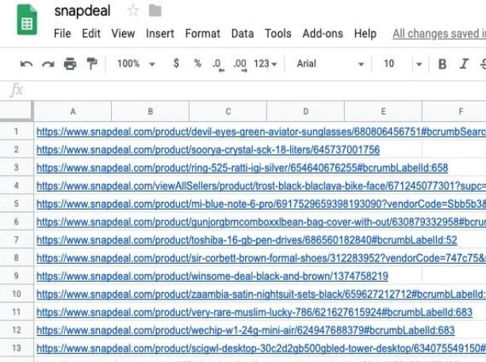

Scraping data from the web is useful for many engineers, consultants, and product managers for their research and development of products. I had mentioned in the blog for a minimalist approach for UI design that I used web scraping for reducing the product detail page to a lesser number of attributes and information about a product. While that was for visual representation, such data can also be used for analysis, POCs, and user or market research. One example is from a requirement of a group of consultants who work at a bank and wanted me to help them get tick data which was price fluctuations of a type of financial product that is open to the public but the owners of the data did not have APIs for consumption by developers. Hence these consultants had to use a web scraping tool. There can be similar applications for a wide range of applications for visually representing data to present a business case.
Find the script here.
To start with, Python is good programming and scripting language with packages for this purpose: BeautifulSoup (you can also use Selenium). And to structure the solution, there can be a database for storing the data for analysis or a flat file as a source and output of the analysis like graphs, charts, or simply a data table of the results of processing. In fact, it is possible to import it to an excel sheet, and then further operations can be performed by someone who is comfortable with Excel. The scraping tasks like the mentioned requirement can also be put into a cron job to run in the background at regular intervals. In this blog post, I will only provide the script for scraping.
A word of caution: it is important to not overwhelm the servers of the hosting website or web application with repeated calls with the web scrapper. Hence, we should leave a gap of a few seconds in between each call. This can be implemented in a cron job script if used as a batch operation. If this is not done, your IP could be blocked and there could be other actions also. It is ideal to inform the company that you need the data and to request their tech team to develop the API for you. The best way is to inform your higher management about this business need.
To demonstrate, I stored the URLs into an Excel sheet to analyze and this is a manual step since I had to pick a product URL selectively. This part can also be automated with web crawling:

Now we can look at the script to be run locally on a macosx computer.
The script will take either the timestamp or --n option (for new product list stored in an excel sheet). You will only add the product URLs to this sheet. No code changes are needed for this.
You can run the script as:
python scraping_sample.py 20190503_165432
This will show you the result for the timestamp 20190503_165432 which is the _